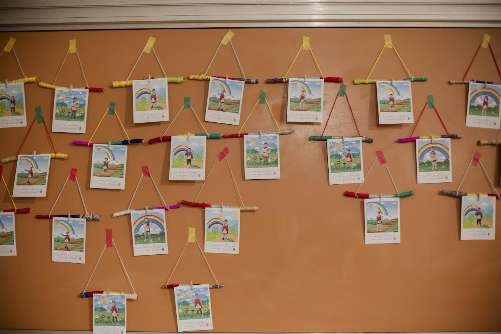
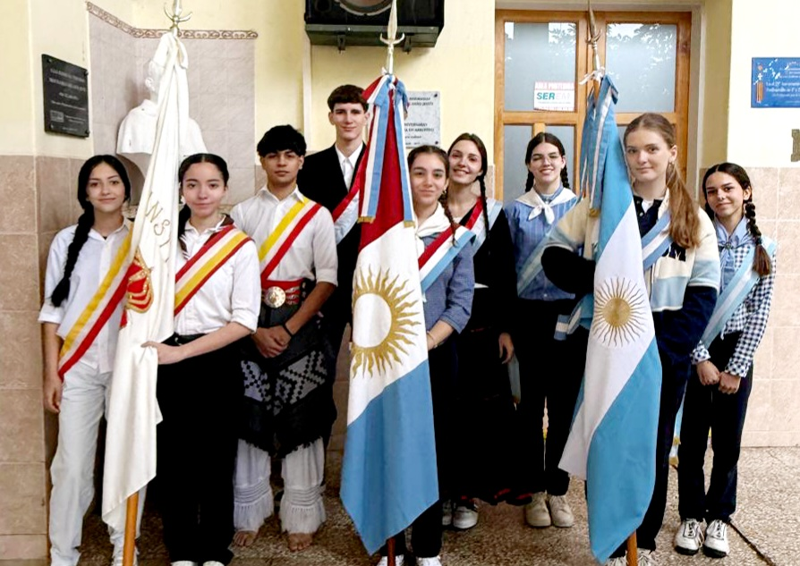
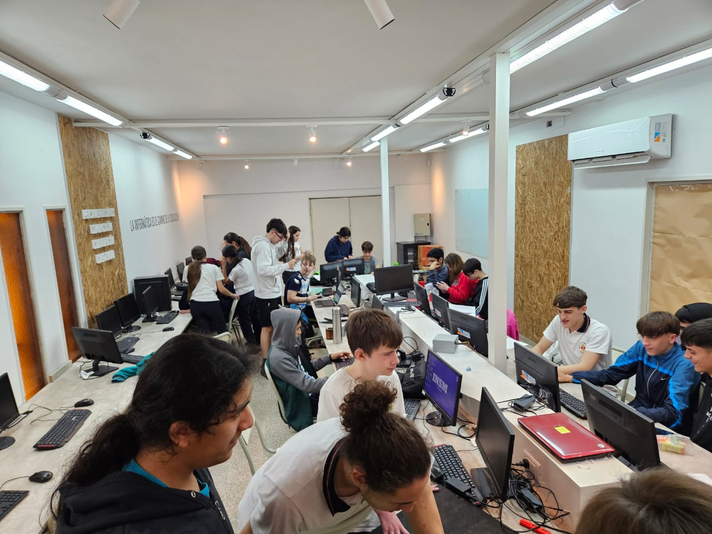
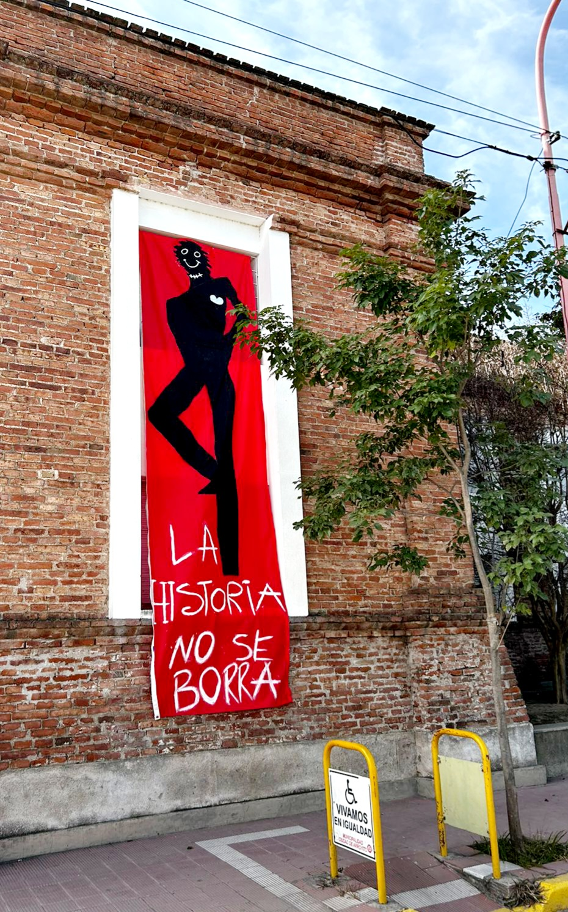

Vida institucional
Todo lo que pasa en nuestra comunidad
Propuestas, encuentros y experiencias que conectan a estudiantes, docentes y familias.
Ver proyectos →Formación integral, acompañamiento y nuevas oportunidades para aprender, crear y construir el futuro.
Primeros aprendizajes en una comunidad que acompaña.
02 · EducaciónCuriosidad, autonomía y experiencias significativas.
03 · EducaciónPreparación para nuevos desafíos académicos y personales.
04 · EducaciónFormación y proyectos para seguir creciendo.

El Instituto Nuestra Señora de la Merced construye su propuesta educativa desde una mirada integral, acompañando las distintas etapas de formación y fortaleciendo el vínculo con las familias y la comunidad.
La educación, los valores y la participación se encuentran con proyectos, experiencias y espacios que permiten que cada estudiante encuentre su manera de crecer.
Conocé nuestras propuestas educativas y encontrá el espacio que corresponde a cada momento de la trayectoria escolar.
Una selección de actividades, proyectos y momentos que forman parte de la vida institucional.

Propuestas, encuentros y experiencias que conectan a estudiantes, docentes y familias.
Ver proyectos →
Los actos y encuentros institucionales son espacios para reconocernos y construir identidad.
Nuestra institución →
La tecnología y los proyectos interdisciplinarios abren nuevas formas de aprender.
Explorar →La formación integral pone en el centro a las personas, sus capacidades, sus preguntas y sus proyectos. Cada experiencia es una oportunidad para aprender con otros.

Una escuela activa también se construye a través de proyectos, talleres y propuestas que salen del aula.
Encontrá la información institucional y los canales de contacto del INSM.
Una comunidad educativa en Arroyito, Córdoba.
Dirección: consultá nuestra página de contacto.
Horarios: información institucional y atención.